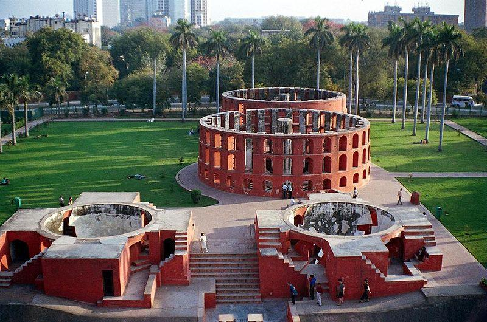
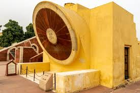

About Jantar Mantar

Jantar Mantar is an astronomical observatory built by Maharaja Sawai Jai Singh II in the early 18th century. Located in Jaipur, Rajasthan, it consists of a collection of architectural astronomical instruments, which were used to observe celestial bodies with the naked eye.
The observatory features various instruments, such as the Samrat Yantra (a giant sundial), Jai Prakash Yantra (used to measure altitudes and azimuths), and Rama Yantra (a cylindrical building with an open top and a pillar in the center).
Main Points
- Built by Maharaja Sawai Jai Singh II in the early 18th century.
- Consists of several astronomical instruments for observing celestial bodies.
- Each instrument serves a specific astronomical purpose.
- Reflects the scientific and architectural advancements of its time.
- Declared a UNESCO World Heritage Site in 2010.
- Check for Hotel Booking near Jantar Mantar
Gallery

